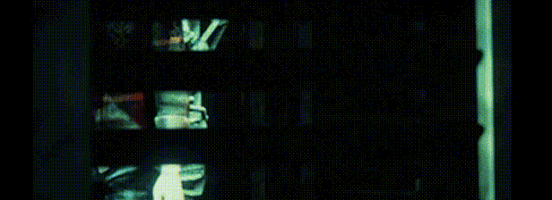

Presos para sempre em um mundo abominável onde nem a morte é uma escapatória, quatro Sobreviventes determinados enfrentam um Assassino sanguinário em um jogo perverso de coragem e astúcia. Escolha um lado e desbrave um mundo de medo e tensão com o melhor sistema assimétrico dos jogos de terror.
Os sobreviventes jogam em terceira pessoa e têm como vantagem uma melhor percepção da situação. O Assassino joga em primeira pessoa e fica mais concentrado na presa. A cada encontro, o objetivo dos Sobreviventes é fugir do Território de Abate sem ser pego pelo Assassino. Isso é mais difícil do que parece – ainda mais em um cenário que muda a cada partida.

• Sobrevivam juntos… ou não – Os Sobreviventes podem cooperar uns com os outros ou ser egoístas. A chance de sobrevivência varia dependendo se vocês trabalharem em equipe ou ficarem cada um por si. Você conseguirá despistar o Assassino e fugir do Território de Abate?
• Onde eu estou? – Cada nível é gerado proceduralmente, assim você nunca sabe o que esperar. Pontos de surgimento aleatórios significam que você nunca vai se sentir em segurança, uma vez que o mundo e seus perigos mudam a cada partida.
• Um banquete para assassinos – Dead by Daylight se inspira em referências de todos os cantos do mundo do horror. Como Assassino, você pode ser desde um implacável Slasher a aterradoras entidades paranormais. Familiarize-se com os Territórios de Abate e domine o uso do poder único de cada Assassino para conseguir caçar, capturar e sacrificar suas vítimas.
• Indo cada vez mais fundo – Cada Assassino e cada Sobrevivente têm um sistema de progressão complexo e vários elementos desbloqueáveis que podem ser personalizados de acordo com a sua estratégia pessoal. Experiência, habilidade e compreensão do ambiente são essenciais para ser capaz de caçar ou despistar o Assassino.
• Pessoas reais, medo real – Os níveis procedurais e as reações humanas reais ao puro horror fazem de cada sessão de jogo um espetáculo de situações inesperadas. Você nunca sabe o que vai acontecer. O ambiente, a música e ambientes de dar calafrios se combinam para criar uma experiência apavorante. Se tiver tempo, você pode até acabar descobrindo o que as brumas escondem.